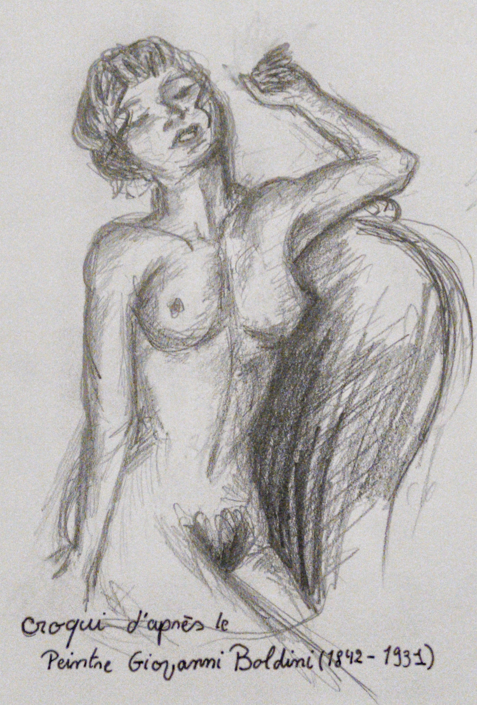
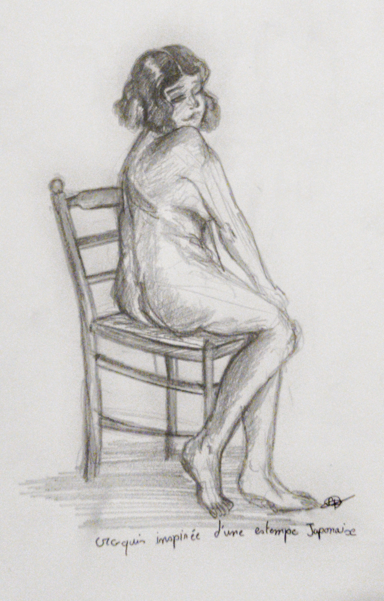
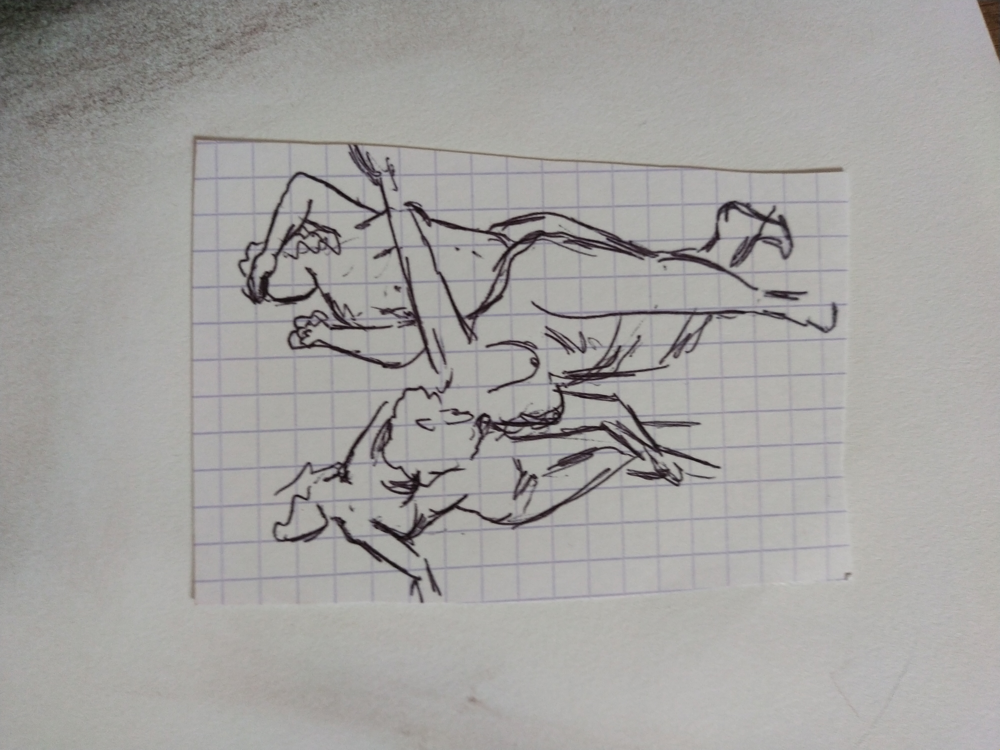
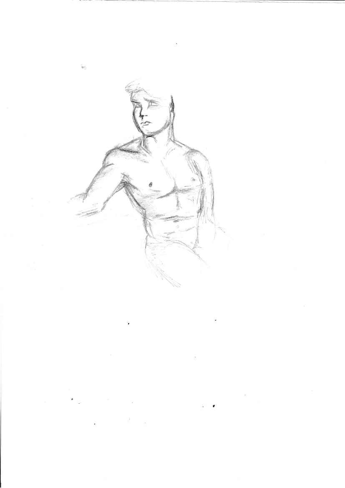
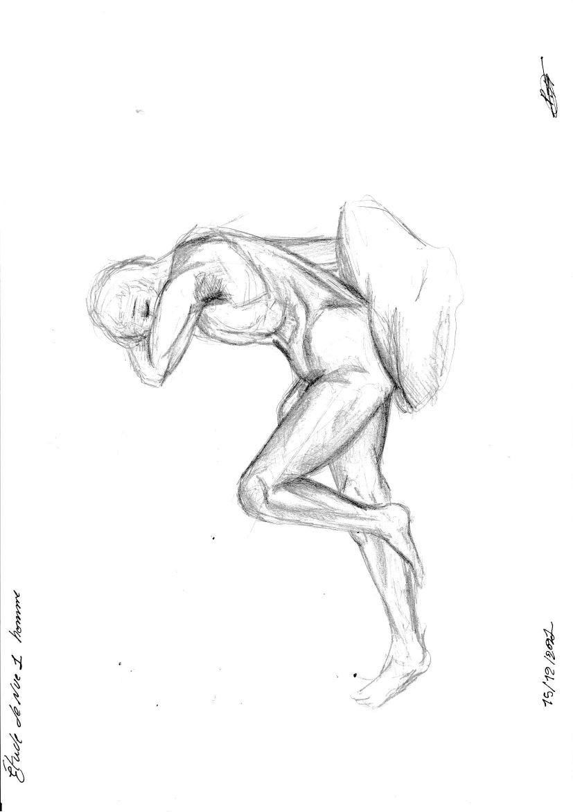
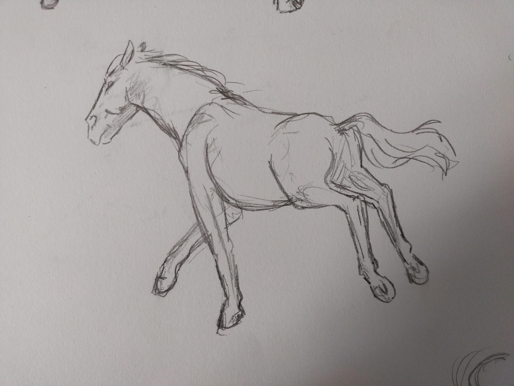
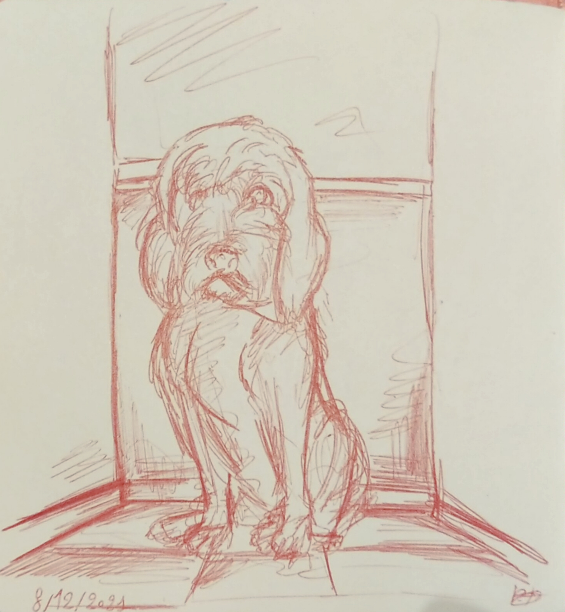
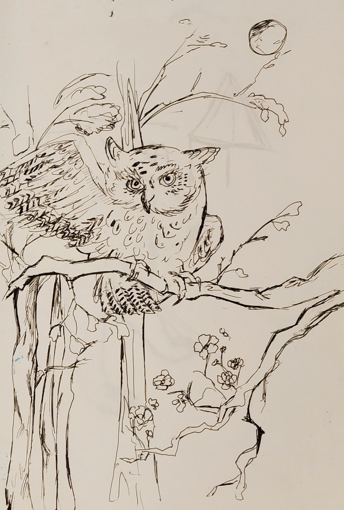

Je m’appelle Perrine Toniazzo.
Je suis passionnée par l’art sous toutes ses formes,
je rêve depuis toujours de devenir Scénariste
et créatrice d’animation 2D/3D.
Tous les dessins, croquis et Maquettes qui figurent
sur ce site sont mes réalisations, merci de ne pas
copier, et prendre mes photos merci.
Les Vivants
Croqui de nu
D'après modèle papier
Fait au crayons à papier
Année de création 2020
Croquis de nu
Au crayons à papier HB
D'après modèle papier
(1842-1991)
Année de création 2020
Croquis de nu
Au crayons à papier HB
D'après le film titanic
Année de création 2021


Croqui de nu
Au crayons à papier Hb
D'après le peintre Giovani Boldini
(1842-1991)
Année de création 2021
Croqui de nu
Au crayons à papier HB
Inspirée d'une estampe japonaise
Année de création 2021
Croqui de nu
Au crayons à papier HB
D'après un arstiste peintre inconnu
Année de création 2021



Croqui de nu
D'après un modèle papier
Fait au stylo noir
Année de création 2021
Croqui corp nu
D'après un modèle sculpté
(jardin des tuileries)
Fait au crayons à papier
Année de création 2021
Croquis de nu
D'après un modèle vivant
Fait au criterium
Année de création 2021





Les positions du corp
Dates de création : 2022
Technique : Ancre de chine et stylo


Etude des mains
Dates de création : 2021/2022
Technique : crayon à papier


Les expressions
Dates de création : 2021
Technique : pastel sec
Portrait
Dates de création : 2021
Technique : crayon à papier
Portrait
Dates de création : 2021
Technique : crayon à papier
Portrait


Dates de création : 2021
Technique : Cerne relief doré
Auto portrait

Animaux







Architectures